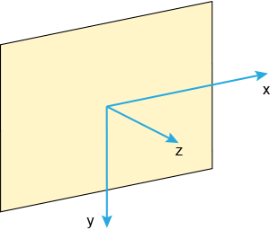
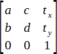
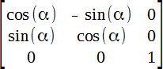
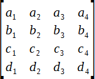

CSS свойство transform

Свойство transform позволяет поворачивать, масштабировать, наклонять или сдвигать элемент, а также комбинировать виды трансформаций, перечисляя функции трансформации через пробел. В качестве значений принимает одно ключевое слово или одну и более функцию трансформации. Значение по умолчанию none, анимируется.
Функций трансформации могут изменять элемент относительно одной, двух или трех осей блока. Координатные оси: оси X и Y находятся в плоскости экрана, а ось Z ему перпендикулярна.
.elem {
perspective: 2000px;
transform: none || function | functions;
transform: none || perspective(2000px) | function | functions;
}
Если одним из параметров, переданных свойству
transform, была указана фукнция
perspective(), то она должно быть указана первой.
C помощью функций трансформаций можно делать отражение элемента, задавая отрицательные значения параметров у некоторых функций. Все функции комбинируются между собой, позволяя тем самым получить множество новых фигур. Любая трансформация по умолчанию происходит относительно центральной точки элемента, но её положение можно изменить с помощью свойства transform-origin.
.block{
-webkit-transform-style: preserve-3d;
-moz-transform-style: preserve-3d;
transform-style: preserve-3d;
-webkit-transform: translateY(100px);
-moz-transform: translateY(100px);
-ms-transform: translateY(100px);
-o-transform: translateY(100px);
transform: translateY(100px);
}
Функции трансформации применяются к элементу в порядке слева направо, это необходимо учитывать при модификации элемента, иначе можно получить не запланированный результат.
transform: rotateZ(90deg) scaleX(.5);
|
transform: scaleX(.5) rotateZ(90deg);
|
 |
|
С помощью различных функций, переданных свойству transform, можно трансформировать элементы различными способами, одним или сразу несколькими:
- поворачивать их относительно оси (одной или нескольких)
- изменять размер - масштабировать
- искажать элемент на заданный угол (например: из квадарата сделать ромб)
- добавлять дополнительный эффект 3D - перспективу
Функция rotate(α) поворачивает элемент в двумерном пространстве на заданный угол относительно точки трансформации, задаваемой свойством transform-origin.
Положительное значение поворачивает элемент по часовой стрелке, а отрицательное - поворачивает элемент против часовой стрелки. По умолчанию точкой поворота является центр элемента.
- rotateX() поворачивает элемент на заданный угол относительно оси X.
- rotateY() поворачивает элемент на заданный угол относительно оси Y.
- rotateZ() поворачивает элемент на заданный угол относительно оси Z.
- rotate3d поворачивает элемент одновременно по трем осям на заданный угол.
rotate(α) соответствует rotateZ(α) или rotate3d(0, 0, 1, α).
| transform: rotateX(180deg); |
transform: rotateY(180deg); |
transform: rotateZ(5deg); |
|
|
|
Стилевая функция scale() масштабирует элемент в двумерном пространстве по горизонтали и вертикали или одновременно в двух направлениях. Изменение масштаба может происходить как в большую, так и в меньшую сторону. Значение масштаба по умолчанию равно 1, поэтому любое значение от 0.99 до 0.01 визуально уменьшает элемент, в то время как любое значение больше или равное 1.01 визуально его увеличивает.
.elem {
transform: scale(x y);
}
Функция примимает одно или два значения. Если указано одно значение, то оно применяется для изменения размера элемента по двум осям одновременно. Если заданы два значения, то первое изменяет элемент по оси X, а второе - по оси Y.
- scaleX() - масштабирует элемент по горизонтали.
- scaleY() - масштабирует элемент по вертикали.
- scaleZ() - масштабирует элемент по оси Z.
- scale3d - масштабирует элемент в трёхмерном пространстве [scale3d(sx, sy, sz)].
| transform: scaleX(.7); |
transform: scaleY(.7); |
transform: scale(.7); |
|
|
|
Частные случаи трансформации:
- transform: scale(-1, 1) - отражение по горизонтали;
- transform: scale(1, -1) - отражение по вертикали;
- transform: scale(-1, -1) или scale(-1) - отражение по Г и В;
- transform: scaleX(-1) - отражение по горизонтали;
- transform: scaleY(-1) - отражение по вертикали;
- transform: scaleX(-1) scaleY(-1) - одновременное отражение по Г и В.
При использовании scaleZ для трёхмерных преобразованиях элементы могут масштабироваться по оси z. Это не очень интересно, когда никаких других трёхмерных преобразований нет, так как нечего, в частности, и масштабировать. В демонстрации ниже масштаб элементов увеличивается и уменьшается по оси z, при этом добавляется значение rotateX, чтобы увидеть поведение scaleZ. При удалении rotateX элементы будут выглядеть не изменёнными.
scaleZ(2) scaleZ(.5)
Функция трансформации translate сдвигает элемент относительно исходного расположения на заданное значение по горизонтали и вертикали, т.е. работает несколько похоже на относительное позиционирование, толкает и тянет элемент в разных направлениях, не прерывая обычного потока документа.
В качестве значений принимаются любые единицы длины, принятые в CSS. Положительные значения толкают элемент вниз и вправо от позиции по умолчанию, а отрицательные значения тянут элемент вверх и влево. Если задано одно значение, то сдвигает элемент по горизонтали, если два - сдвигают элемент по горизонтали и вертикали.
.elem {
transform: translate(X, Y);
}
- translateX(tx) - cдвигает элемент по горизонтали на указанное значение.
- translateY(ty) - cдвигает элемент по вертикали на указанное значение.
- translateZ(tz) - cдвигает элемент по оси Z на указанное значение. Эффект будет заметен только при использовании перспективы, поворота элемента по осям X или Y.
- translate3d(tx, ty, tz) - cдвигает элемент на заданное значение в пространстве 3D.
Элементы могут также передвигаться по оси z с помощью значения translateZ. Отрицательное значение будет толкать элемент дальше по оси z, что приводит к уменьшению элемента. Положительное значение будет тянуть элемент ближе по оси z, что приводит к увеличению элемента.
| transform: translateX(20px); |
transform: translateY(10px); |
transform: translate(-20px,10px); |
|
|
|
Матрица преобразований предназначена для вычисления новых координат элемента с целью его трансформации и позволяет установить множество преобразований одновременно. Различают двумерную и трёхмерную матрицу, они отличаются друг от друга размером и пространством, на которое ориентированы.
Двумерная матрица
Преобразование с помощью двумерной матрицы происходит в плоскости экрана, при этом соблюдается условие, что линии всегда остаются параллельными, поэтому в качестве трансформации допустимы поворот, масштабирование, наклон и изменение положения, но никак не перспектива или нечто подобное. Это уже область работы трёхмерной матрицы.
Сама матрица имеет размер 3х3 и в общем виде записывается так:

Для матрицы преобразований применяется функция matrix(), внутри скобок перечисляются коэффициенты.
transform: matrix(a, b, c, d, tx, ty);
| a |
| Изменение масштаба по горизонтали. Значение больше 1 расширяет элемент, меньше 1, наоборот, сжимает.
Для отражение элемента по горизонтали следует установить a = -1.
aналог scaleX() |
| b |
| Наклон по вертикали. Положительное значение наклоняет вверх, отрицательное вниз.
аналог skewY() |
| c |
| Наклон по горизонтали. Положительное значение наклоняет влево, отрицательное вправо.
аналог skewX() |
| d |
| Изменение масштаба по вертикали. Значение больше 1 расширяет элемент, меньше 1 - сжимает. Для отражение элемента по вертикали следует установить d = -1.
аналог scaleY() |
| tx |
| Смещение по горизонтали в пикселях. Положительное значение сдвигает элемент вправо на заданное число пикселей, отрицательное значение сдвигает влево.
аналог translateX() |
| ty |
| Смещение по вертикали в пикселях. При положительном значении элемент опускается на заданное число пикселей вниз или вверх при отрицательном значении.
аналог translateY() |
| - |
| значение по умолчанию:
transform: matrix(1, 0, 0, 1, 0, 0); |
| - |
| transform: matrix(1.2, 0, 0, 1, 0, 10); |
| - |
| transform: matrix(1, .5, 0, 1, 10, 0); |
| - |
| transform: matrix(.8, 0.5, 0.5, .8, 0, 0); |
Поворот
Поворот является комбинацией масштабирования и наклона, но чтобы сохранить исходные пропорции элемента преобразования должны подчиняться строгим вычислениям с использование синусов и косинусов.

Сам поворот происходит по часовой стрелке, α задаёт угол поворота в градусах.
Трёхмерная матрица (matrix3d)
Название «трёхмерная» лишь отражает тот факт, что матрица предназначена для работы в 3d-пространстве. Трёхмерная матрица имеет размер 4х4 и применяется для преобразования координат элемента в трёхмерном пространстве. В общем виде она выглядит так:

a1 b1 c1 d1 a2 b2 c2 d2 a3 b3 c3 d3 - describing the linear transformation.
a4 b4 c4 d4 - describing the translation to apply.
.item {
transform: matrix3d(a1, b1, c1, d1, a2, b2, c2, d2, a3, b3, c3, d3, a4, b4, c4, d4);
}
/* или */
.item {
transform:matrix3d(
a1, b1, c1, d1,
a2, b2, c2, d2,
a3, b3, c3, d3,
a4, b4, c4, d4
);
}
В чистом виде эта матрица применяется редко из-за своей сложности и наличия удобных функций для трансформации в пространстве. Если вам интересна тригонометрия и формулы преобразований одних координат в другие, то почитайте этот материал.
https://developer.mozilla.org/en-US/docs/Web/CSS/transform-function
Изменяет масштаб объекта согласно заданному значению.
.elem {
zoom: число | проценты | normal;
}
| число |
Число с плавающей запятой, значение 1.0 соответствует normal. Значения больше 1.0 увеличивают масштаб объекта, значения меньше 1.0 уменьшают масштаб. |
| проценты |
Целое число, заданное в процентах. Указывает изменение масштаба относительно 100%, которое соответствует значению normal (1.0 = 100% = normal). |
| normal |
Значение по умолчанию. Объект имеет исходный масштаб. |
|
|
|
|
|
|
|
|
|
|
| 5.5 |
12 |
1 |
15 |
3.1 |
126 |
2.1 |
126 |
15 |
3 |